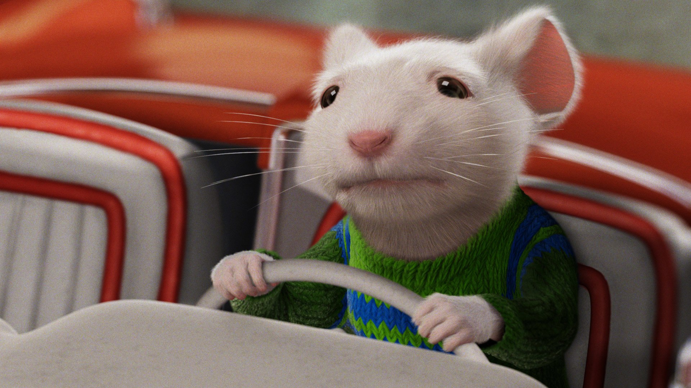

About Stuart
Stuart is awesome he is a rat and he was adopted by humans.
Stuart driving his car.
Stuart characteristics
- He is a rat
- He speaks and walks like a human
- He has a little red car
Stuart Friends
Stuart has awesome friends, his best friend is Margalo. Click on the links below to learn more about them: